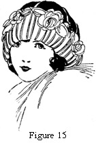
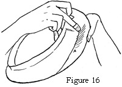
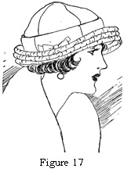
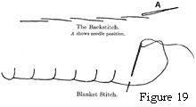
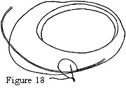
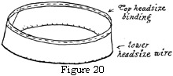

1925—Millinery
by Jane Loewen
CHAPTER III—PATTERN FRAMES
I. CLASSIFICATION OF FRAMES MADE FROM PATTERNS
Since a pattern can represent only a flat surface, patterns can be made only for hats that have straight lines. The use of seams allows a frame to droop or to turn straight up from the headsize. A curved mushroom or an up-turned brim with an irregular curve must be stretched over a wire frame.
Any curves made in the shape of pattern brims are accomplished by thimbling or by the use of bias-frame material.
STRAIGHT BRIMS
Straight brims may be divided into three classes, mushroom, sailor, and bias turban brims.
1. Mushroom brims are brims that droop from the headsize down. The degree of droop, or mushroom, varies with the styles of the times and with the size of the hat.
The angle of the droop of a small mushroom brim may be much greater than that of a large brim. This is because a wide brim with a great deal of droop would entirely obscure the face.
2. Sailor brims are either perfectly straight flat brims or slightly mushroom. In either case a sprung steel wire is necessary for a large brim. This holds the edge firmly without springing out of shape.
3. Bias turban brims. A bias strip of elastic net or willow is often used to form the coronet of a turban. Usually such a frame has a headsize turn; that is, it is turned up at the headsize but not thimbled and has a flare at the brim edge. The measurements for headsize turn and the brim edge are given with the pattern (see Figure 15).
ROLLED BRIMS
1. Thimbled rolls. All of the up-turned brims and brims with turned-up edges which are given in a pattern design have a roll that is made by thimbling (see Figure 16).
Thimbling a roll. To make the roll in a frame, hold the outside of the frame in the palm of the left hand and rub the inside with the thimble on the thimble finger of the right hand.
2. Headsize rolls are usually directly at the headsize so that the brim turns up from the face. Ordinarily an extra wire is not needed.
3. Facing rolls are often an inch or more from the headsize, in which case a wire is used and measurement is given for it.
Often rolls are at the back, others are at the front or side. An extra brace is seldom used except for very large brims.
4. Edge rolls. Edge rolls may be a very slight shaping of the frame or may be an extra bias strip added. In some cases this is a fold of elastic net added after the frame is wired.
In other cases a pencil roll is used. For this finish, the frame has a thick pencil-like roll on the edge. One edge of a bias strip is sewn to the wired edge of a brim. The other edge of the bias strip is rolled up over the top of the brim and wired with a circle of wire slightly larger than the brim edge wire. Measurements for this wire are always given on the pattern, as the roll varies from one inch to three inches.
II. COMPARISON OF PROCESSES IN MAKING UNROLLED AND ROLLED BRIMS
In making a straight unrolled brim the headsize is wired first, then the edge is wired.
In making a rolled brim the headsize is wired first, then the roll is thimbled and wired if necessary. The edge is wired last.
III. CUTTING THE FRAME
PLACING OF PATTERN
Always place the pattern so that the center front is at the bias corner of the material.
When willow is used, place the pattern on the frame material so that the rough side is the top of the frame. The cloth side is then on the under side.
When the headsize is slashed and the slashes bent up, the slashes are held up by the cloth and do not break off as they would if the smooth side were on top.
When the brim is rolled, the smooth cloth side of the willow holds the curve better than the fiber side.
OBTAINING CORRECT HEADSIZE
Measure a correct headsize by slipping frame wire around the head where the hat is worn. Hold the end of the wire firmly, so that the measured circle cannot slip. Allow two and one-half inches for lapping, and cut the wire. Tie the ends down with short lengths of tie wire, or wrap strong thread firmly over each end and sew through the silk wrapping of the wires.
Shape the wire circle thus formed into an ellipse and slip inside the frame above the slashes on the line marked "headsize wire." If the headsize is larger than the average, the wire will come below the line; if smaller, the headsize wire will come above the headsize line. Sew this wire to the headsize line with a blanket stitch (see Figure 19). Patterns are made the average head-size, which is 23 to 25 inches.
ADJUSTING SEAMS
Frame seam allowances are always made on the patterns. To make a frame headsize smaller or larger, always make an extra seam in the front if there is a difference of more than ¾ inch desired in the headsize. To take more than ¾ inch out or to add more than ¾ inch at one place spoils the line of the hat.
IMPORTANCE OF TRUE-EDGE OUTLINES
A true-edge outline is no mere matter of chance. It is a geometrical thing. The outline of a hat frame must be absolutely true in curve or angle. An angle is always decided—not accidental-looking.
An edge of a hat must be always one of two things; a perfect ellipse, or an ellipse with a definite irregularity added in a turned curve or a decided angle.
Always trim an edge carefully before wiring it. Try to train the eye to see curves in absolutely correct perspective.
IV. WIRING FRAMES
DIFFERENT KINDS OF WIRE
1. Brace wire is more commonly and widely used than any other one wire. For frame wiring, for wire frames, and for edge-wire finishes it is very satisfactory and especially so for student work (see Chapter V, section I).
2. Lace wire is used for wiring soft frames for sport hats, and for children's hats, and for lace bows and edges.
3. French wire is used for wiring frames and for edge wires. It makes a less stiff hat than brace wire does (see Chapter V, section I).
4. Cable wire is used for frames only when a thick-edge effect is desired.
5. Ribbon wire is used to wire frame edge when a fold effect is desired, and for headsize bands.
It is sometimes used as a cording over which fabric or ribbon is shirred. In such cases it forms the only frame used. Measurements and directions are given on the pattern for this type of hat (see Figure 17).
Figure 17. Hat Made on Ribbon Wire for the Frame.
SPECIAL USES OF THESE WIRES
1. Cable wire and French wire may be used for the same purposes. The former simply makes a firmer hat.
2. Lace wire is needed for wiring high lace ruffles and for lace or hair-braid edges and for lace flowers.
3. French wire is needed for frames and finished edges where soft effects are desired.
4. Cable wire is used for only a few edges.
5. Ribbon wire is much used for soft, fold frame edges and for headsize-band finishes.
POINTS OF IMPORTANCE IN WIRING FRAMES
The wire must always have the curve worked out before it is sewed to the frame. Straighten the wire by running the thumb and forefinger over it lengthwise, using the cushion part of the thumb and finger, not the tip. If the tips of the thumb and finger are used, they bend the wire instead of straightening it.
The wire must be sewn at the edge above or below. It cannot be directly on the edge. There is nothing to hold it, and the wire slips.
STITCHES USED
1. A blanket stitch is used for sewing the headsize wire to the frame, for wiring the edge of a brim, and for sewing on the wire at a roll. For this the needle must be stuck through the frame and pushed back to catch the thread knot (see figures 18 and 19).
Figure 18. Wiring the Frame.
Figure 19. The Back Stitch. The Blanket Stitch.
2. A backstitch is used for sewing a headsize band to the slashes of the headsize (see Figure 19, A).
V. BINDING A FRAME
In binding a frame edge, bias crinoline is used for a flat edge (see Chapter VI, section IX). The crinoline should be stretched lengthwise and sewed flat on the frame with running stitches half an inch long.
Always have the binding about an inch wide after stretching. Sew the binding at its edge. The object is to protect the hat covering from being marred or worn by the edge wire. A binding should be sewn so as to blur the wire, not emphasize it.
VI. COVERING FRAME WITH INTERLINING
An interlining is needed to keep the frame from showing through straw braid or fabric and to give an appearance of softness to a hat. Satin without an interlining makes a hard-looking hat.
KINDS OF INTERLINING AND THEIR USES
The fabrics most used for interlinings are cotton flannel, mull, and silkoline.
Cotton flannel is soft, thick, and lightweight. It is preferable except when a thin fabric is used for the hat, and a matching color in interlining is needed.
For colored georgette, lightweight colored crêpes, and thin, dark-colored satin or messaline, mull, or silkoline in matching shades is used for interlinings.
Thin black satin or messaline needs a self-colored interlining only, because the white interlining shows at the needle points in the edge-wire finish.
For very light-colored georgette, as flesh, primrose, or orchid, white cotton flannel is preferable to a thinner material of a self color because it gives a more spongy, soft effect to the crêpe. A thin, closely woven interlining often gives crêpe a hard surface.
STITCHES USED
As a general rule the same stitches are used for an interlining as for the outer fabric. A frame is covered as though silk or velvet were used.
In covering a frame with interlining for a braid hat, the edge stitches need not be carefully done because the braid hides them.
An interlining for a fabric underfacing is sewn separately at the headsize, but interlining and facing are turned over the facing wire together. If they are turned separately, the crêpe or silk edge shows in an ugly edge outline. The facing and the wire are apt to show through the fabric.
EFFECTS TO BE OBTAINED
The effects desired in the use of interlinings are to soften the hat effect, and to keep the frame from showing through the straw braid or fabric.
Interlining can never be close, heavy material, or it will tend to make a heavy hat.
The quality of lightness in a hat is just as important as beauty and becomingness are.
QUESTIONS
- What three kinds of frames come under the classification of straight frames?
- Give directions for thimbling a roll.
- What is a pencil roll? How is the frame made for a hat with a pencil roll?
- What is the difference in the process of wiring a straight frame; a roll frame?
- Give directions for placing a pattern on frame material; for placing a pattern on willow.
- How is a correct headsize obtained?
- Name the kinds of wire used for wiring, frames.
- When is ribbon wire used for a frame?
- What stitches are used in wiring a frame?
- Give directions for binding a frame.
- What kind of interlining is used for georgette crêpe: in black; in flesh; why?
- What kind of interlining is used for a dark shade of thin satin? Why?
- What, geometrically speaking, is a hat outline?